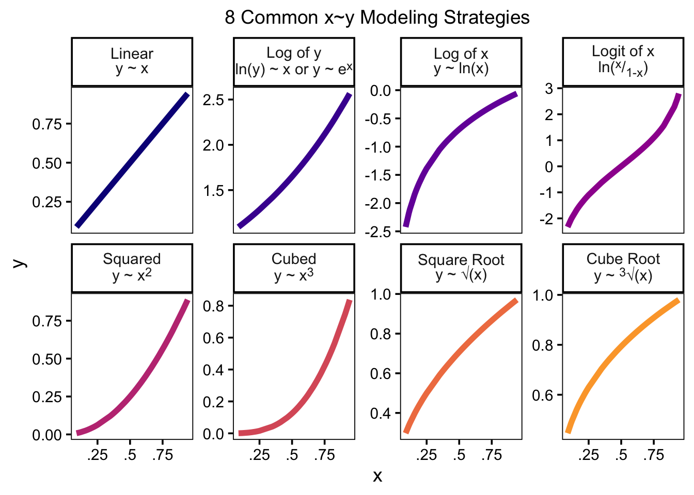
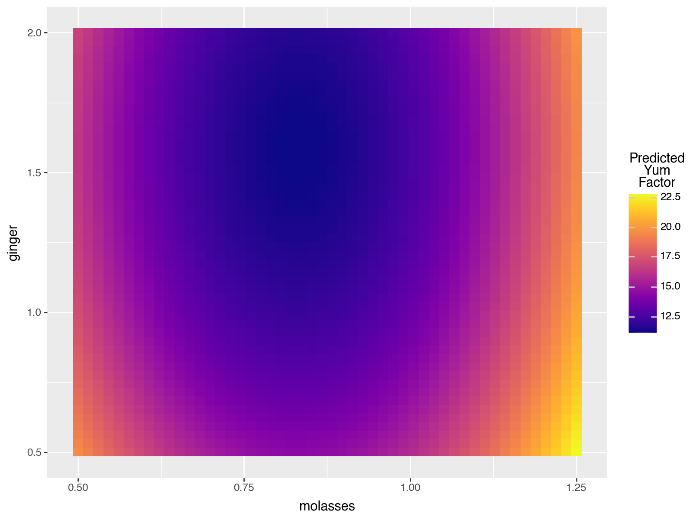
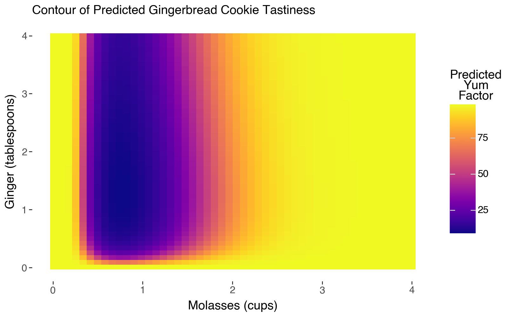
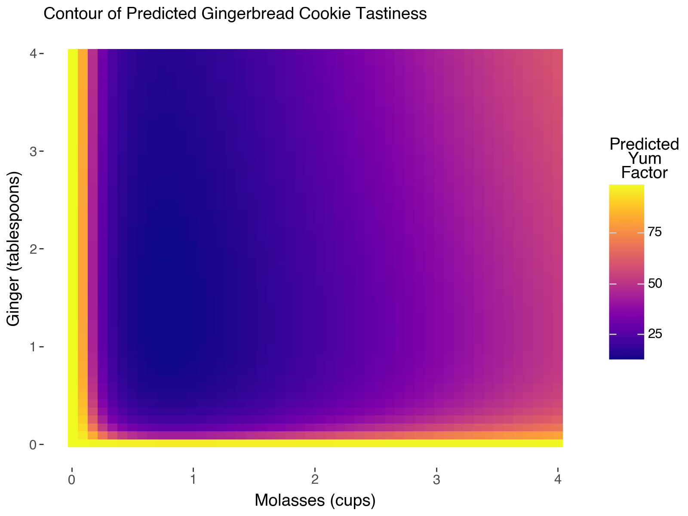
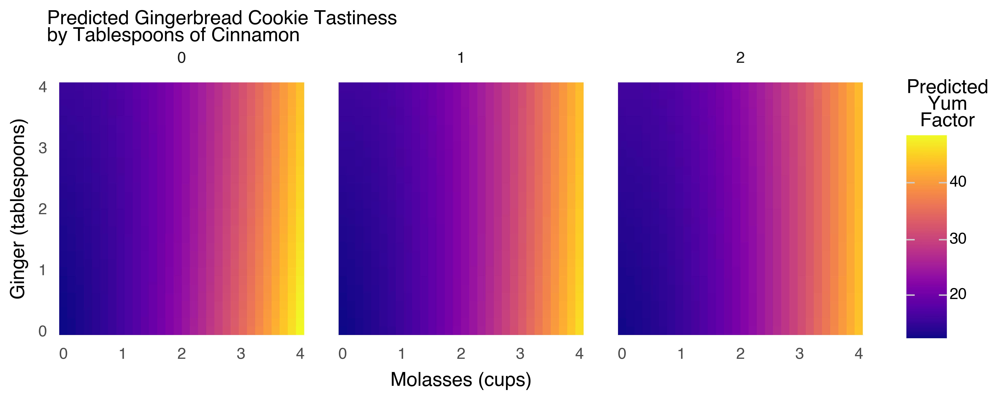
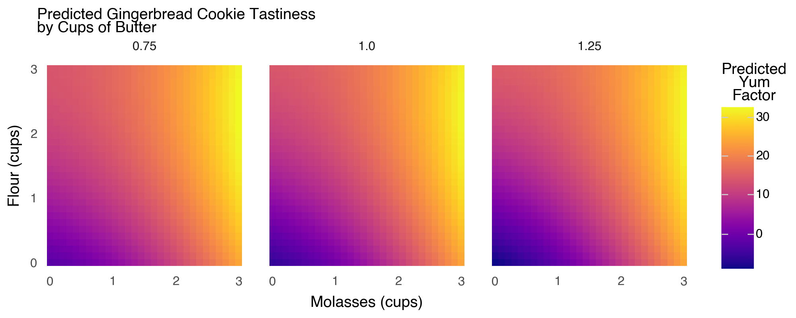
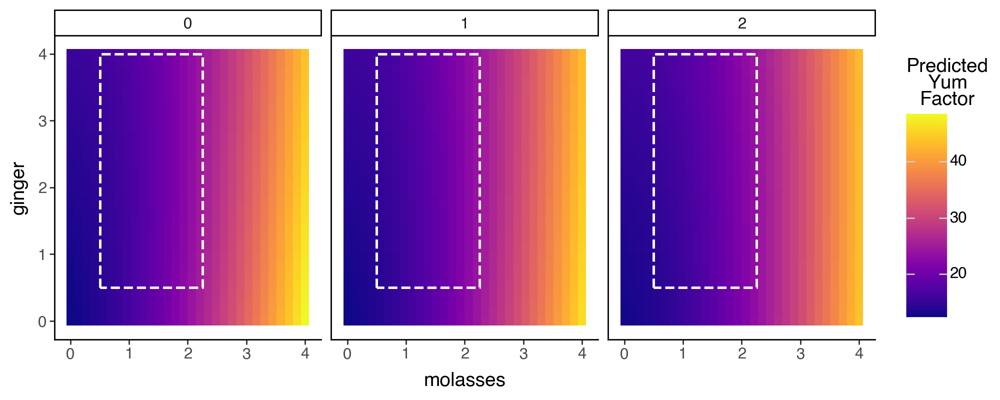

1 Response Surface Methodology in Python

Getting Started
Imagine: A team of enterprising Systems Engineering students have decided to start their own baking company, selling gingerbread cookies in the month of December in the greater Ithaca area! None of them are particularly good at baking, but they’re rad good at design of experiments, so they set out to discover the ultimate gingerbread cookie through factorial design and our new tool, response surface methodology! Follow along below to see a surprisingly accurate example of how you can apply RSM to find the optimal design of your product (in this case, gingerbread!)
Packages
Let’s start by loading the necessary Python packages. We’ll use pandas for data manipulation, plotnine for visualization (which follows the ggplot2 framework), numpy for numerical operations, and statsmodels for statistical modeling.
# Load packages
import pandas as pd
import numpy as np
from plotnine import *
import matplotlib.cm as cm
import matplotlib.pyplot as plt
import os, sys
# Add the functions directory to Python path
sys.path.append(os.path.abspath('functions'))
# Import helper functions from functions_models.py
from functions_models import lm, tidy, glance
# Get plasma colormap for use in plots
plasma_cmap = cm.get_cmap('plasma')
](images/15_cookies_1.jpg)
(#fig:img_intro)Gingerbread Cookies! Courtesy of Casey Chae @ Unsplash
Our Data
They know from past research that the amount of molasses and ginger in gingerbread cookies are likely significantly related to the overall tastiness (called the yum factor in our dataset). But, they’re not sure how much molasses and how much ginger are needed. Molasses can be somewhat expensive too, compared to other ingredients; so they want to optimize the amount of molasses necessary to produce the best cookies.
So, holding all other conditions in the recipe constant, they ran a factorial experiment, making 16 batches of cookies (about 20 cookies per batch).
In their experiment, they tested 4 different amounts of
molasses, including \(\frac{1}{2}, \ \frac{3}{4}, \ 1,\ \& \ 1 \frac{1}{4}\) cups ofmolasses.They also tested 4 different amounts of
ginger, including \(\frac{1}{2}, \ 1, \ 1 \frac{1}{2}, \ \& \ 2\) tablespoons ofginger.Each batch was randomly assigned one of the 16 unique pairings of amounts of ginger and molasses; there are \(4 \times 4 = 16\) unique ways to assign these ingredients, and they included them all to fully account for all the possibilities.
Then, they randomly handed out cookies to folks on campus in exchange for them briefly ranking the
yumfactor of that cookie on a scale from0(disgusting!) to100(delicious!).
Import Data
They compiled their data in the following dataset. Read it in to help them analyze their data! This dataset includes the following variables:
id: unique ID for each cookie (320 cookies!)batch: unique group ID for each batch of about 20 cookies.
Outcome
yum: numeric scale measuring deliciousness of cookie, from0(disgusting) to100(delicious)
Predictors
molasses: cups ofmolassesin batch:0.75,1,1.25, or1.5cups.ginger: tablespoons ofgingerin batch:0.5,1,1.5, or2tablespoons.
Fixed Conditions
cinnamon: 1 tablespoonbutter: 1 cupflour: 3 cups
# Import our data
cookies = pd.read_csv("workshops/gingerbread_test1.csv")
# Check it out!
cookies.head()## id batch yum molasses ginger cinnamon butter flour
## 0 81 5 9 0.75 1.0 1 1 3
## 1 82 5 8 0.75 1.0 1 1 3
## 2 83 5 4 0.75 1.0 1 1 3
## 3 84 5 18 0.75 1.0 1 1 3
## 4 85 5 19 0.75 1.0 1 1 3
1.1 Models for RSM
In our previous workshop, we learned to calculate the difference of means for any set of groups (in this case, batch of cookies). When we get many different levels in our predictors (eg. not just a treatment and control), we might prefer to use lm() to estimate a linear model of our outcome (yum), rather than computing the difference of means many times.
1.1.1 Specifying an Interaction Model with Polynomials
However, we will see quickly that different specifications of our model may work better than others. We’re going to try three different models that predict yum using cups of molasses and tablespoons of ginger, and we’ll evaluate the \(R^{2}\) of each (% of variation in outcome yum explained by model). These include:
- Basic First-Order Polynomial Model, where:
\[ Yum = \alpha + \beta_{m} X_{m} + \beta_{g} X_{g} \]
\(B_{m}\) is the effect of a 1 cup increase of Molasses.
\(B_{g}\) is the effect of a 1 tablespoon increase of Ginger.
- Interaction Model, where:
\[ Yum = \alpha + \beta_{m} X_{m} + \beta_{g} X_{g} + \beta_{mg} X_{m} X_{g} \]
- \(B_{mg}\) is the interaction effect as
molassesincreases by 1 cup ANDgingerincreases by 1 tablespoon.
m2 = lm(formula = 'yum ~ molasses * ginger', data = cookies)
# Also written manually as:
# yum ~ molasses + ginger + molasses:ginger- Second-Order Polynomial Model with Interaction, where:
\[ Yum = \alpha + \beta_{m} X_{m} + \beta_{g} X_{g} + \beta_{mg} X_{m} X_{g} + \beta_{m^{2}} X_{m}^{2} + \beta_{g^{2}} X_{g}^{2} \]
- \(\beta{m^2} X_{m}^{2}\) is the effect as the square of molasses increases by 1.
- Together, \(\beta_{m} X_{m}\) and \(\beta_{m^2} X_{m}^{2}\) act as a polynomial term predicting
yum.
# Add polynomial terms by creating squared columns first
cookies['molasses_sq'] = cookies['molasses'] ** 2
cookies['ginger_sq'] = cookies['ginger'] ** 2
# Then fit the model with interaction and polynomial terms
m3 = lm(formula = 'yum ~ molasses * ginger + molasses_sq + ginger_sq', data = cookies)To review, this model equation can be viewed by just checking the coefficients. We can also write it out below; I’ve rounded to 2 decimal places for simplicity.
## Intercept 50.86
## molasses -78.81
## ginger -8.85
## molasses:ginger -0.22
## molasses_sq 47.60
## ginger_sq 2.85
## dtype: float64The model equation is:
\[ \hat{yum} = \hat{Y} = \alpha + \beta_{m} X_{m} + \beta_{m^{2}} X_{m}^{2} + \beta_{g} X_{g} + \beta_{g^{2}} X_{g}^{2} + \beta_{mg} X_{m} X_{g} \]
Let’s evaluate the \(R^{2}\) of our three models below using the glance() function from our helper functions in functions/functions_models.py, and combine those DataFrames into one using pd.concat(). We see that the polynomial terms dramatically improve the predictive power of our model.
# Get model summaries
g1 = glance(m1)
g2 = glance(m2)
g3 = glance(m3)
# Combine them
model_comparison = pd.concat([g1, g2, g3], ignore_index=True)
model_comparison.insert(0, 'model', ['m1', 'm2', 'm3'])
model_comparison## model rsq adj_rsq ... bic df.residual nobs
## 0 m1 0.057618 0.051672 ... 2117.566667 317.0 320.0
## 1 m2 0.057646 0.048699 ... 2123.325540 316.0 320.0
## 2 m3 0.270207 0.258586 ... 2053.063536 314.0 320.0
##
## [3 rows x 12 columns]Not really amazing quality model fit here - and that does happen! We can tidy() our model m3 to confirm.
The low p_value for many of our predictors tells us that our predictors do tend to have statistically significant relationships with the yum factor of our cookies. (Admittedly, ginger’s direct effect is not very significant - just ~75% confidence). But, it looks like other factors not currently in our model might also impact yum factor.
## term estimate se statistic p_value lower upper
## 0 Intercept 50.86 4.64 10.95 0.00 41.73 60.00
## 1 molasses -78.81 9.39 -8.40 0.00 -97.28 -60.34
## 2 ginger -8.85 3.71 -2.38 0.02 -16.15 -1.55
## 3 molasses:ginger -0.22 2.05 -0.11 0.91 -4.25 3.80
## 4 molasses_sq 47.60 5.12 9.30 0.00 37.53 57.67
## 5 ginger_sq 2.85 1.28 2.23 0.03 0.33 5.37
1.1.2 Modeling with lm()
R’s rsm() package has no direct Python equivalent. However, we can achieve the same results by manually specifying polynomial terms in our lm() formulas, as we did above.
Let’s make a simple ‘First-Order’ polynomial: yum ~ molasses + ginger (‘m1’ from above!)
## Intercept 14.8225
## molasses 4.2100
## ginger -1.9200
## dtype: float64Let’s make a more complex ‘Second-Order’ polynomial model: yum ~ molasses * ginger + molasses_sq + ginger_sq (which we did as m3)
## Intercept 50.865
## molasses -78.810
## ginger -8.849
## molasses:ginger -0.224
## molasses_sq 47.600
## ginger_sq 2.850
## dtype: float64
1.1.3 Transforming Variables
By default, linear models estimate linear relationships between predictors and outcomes, but many relationships are indeed not linear! Here are 8 ways we might model associations!

A logit function can sometimes help - that is designed for when a variable ranges between 0 and 1; we could write a classic logit as logit = lambda p: np.log(p / (1 - p)).
# Write a custom logit function for data from 0 to 100
def logit(p):
return np.log(p / (1 - p))
# Notice how it ONLY accepts our positive values greater than 0 and less than 1
test_vals = [-1, 0, 0.1, 0.2, 0.5, 1, 2]
result = [logit(val) if 0 < val < 1 else np.nan for val in test_vals]
print(result)## [nan, nan, -2.197224577336219, -1.3862943611198906, 0.0, nan, nan]Let’s try a few of these strategies for our x and y variables, and see if any of them improve our predictive power (\(R^{2}\)). Spoiler alert: In our data, they don’t but in other datasets, they very well might! Always a good thing to check.
For example, we can try transforming the outcome variable, using a standard linear trend (business as usual), a log transformation, or a square root transformation.
# Linear (normal)
m_linear = lm(formula = 'yum ~ molasses * ginger + molasses_sq + ginger_sq', data = cookies)
g_linear = glance(m_linear)
R2_linear = g_linear['rsq'].values[0]
print(f"R2: {R2_linear:.3f}")## R2: 0.270# Logged (add 1 since yum contains 0s)
cookies_log = cookies.copy()
cookies_log['log_yum'] = np.log(cookies_log['yum'] + 1)
m_log = lm(formula = 'log_yum ~ molasses * ginger + molasses_sq + ginger_sq', data = cookies_log)
g_log = glance(m_log)
R2_log = g_log['rsq'].values[0]
print(f"R2 (logged): {R2_log:.3f} ({'Worse' if R2_log < R2_linear else 'Better'})")## R2 (logged): 0.227 (Worse)# Square Root
cookies_sqrt = cookies.copy()
cookies_sqrt['sqrt_yum'] = np.sqrt(cookies_sqrt['yum'])
m_sqrt = lm(formula = 'sqrt_yum ~ molasses * ginger + molasses_sq + ginger_sq', data = cookies_sqrt)
g_sqrt = glance(m_sqrt)
R2_sqrt = g_sqrt['rsq'].values[0]
print(f"R2 (square root): {R2_sqrt:.3f} ({'Worse' if R2_sqrt < R2_linear else 'Better'})")## R2 (square root): 0.253 (Worse)Alternatively, we could try transforming the predictor variables, using a log-transformation.
cookies['log_molasses'] = np.log(cookies['molasses'])
cookies['log_ginger'] = np.log(cookies['ginger'])
cookies['log_molasses_sq'] = cookies['log_molasses'] ** 2
cookies['log_ginger_sq'] = cookies['log_ginger'] ** 2
m_log_pred = lm(formula = 'yum ~ log_molasses * log_ginger + log_molasses_sq + log_ginger_sq', data = cookies)
glance(m_log_pred)## rsq adj_rsq sigma ... bic df.residual nobs
## 0 0.321157 0.310348 5.518872 ... 2029.904703 314.0 320.0
##
## [1 rows x 11 columns]It turns out that few of these transformations really dramatically change the predictive power of the model, so I’ll stick with our original models m3 for the time being.

Figure 1.1: A poorly predicted Gingerbread Cookie Photo by Noelle Otto
Learning Check 1
Question
What happens when you (1) square \(y\), (2) cube \(y\), or (3) take the logit of \((y + 1) / 100\)? Find the \(R^{2}\) for each of these models.
[View Answer!]
Looks like a linear, business-as-usual modeling strategy for our outcome variable \(y\) (yum) is best for this data.
# Logit transformation
cookies_logit = cookies.copy()
cookies_logit['yum_scaled'] = (cookies_logit['yum'] + 1) / 100
cookies_logit['logit_yum'] = np.log(cookies_logit['yum_scaled'] / (1 - cookies_logit['yum_scaled']))
m_logit = lm(formula = 'logit_yum ~ molasses * ginger + molasses_sq + ginger_sq', data = cookies_logit)
g_logit = glance(m_logit)
R2_logit = g_logit['rsq'].values[0]
print(f"R2 (logit): {R2_logit:.3f} ({'Worse' if R2_logit < R2_linear else 'Better'})")## R2 (logit): 0.236 (Worse)# Squared
cookies_sq = cookies.copy()
cookies_sq['yum_sq'] = cookies_sq['yum'] ** 2
m_sq = lm(formula = 'yum_sq ~ molasses * ginger + molasses_sq + ginger_sq', data = cookies_sq)
g_sq = glance(m_sq)
R2_sq = g_sq['rsq'].values[0]
print(f"R2 (squared): {R2_sq:.3f} ({'Worse' if R2_sq < R2_linear else 'Better'})")## R2 (squared): 0.253 (Worse)# Cubed
cookies_cubed = cookies.copy()
cookies_cubed['yum_cubed'] = cookies_cubed['yum'] ** 3
m_cubed = lm(formula = 'yum_cubed ~ molasses * ginger + molasses_sq + ginger_sq', data = cookies_cubed)
g_cubed = glance(m_cubed)
R2_cubed = g_cubed['rsq'].values[0]
print(f"R2 (cubed): {R2_cubed:.3f} ({'Worse' if R2_cubed < R2_linear else 'Better'})")## R2 (cubed): 0.227 (Worse)
1.2 Contour Plots
So now that we have this model, what do we do with it? Response Surface Methodology refers to using statistical models to predict an outcome (a.k.a. response variable) given a series of varying conditions. This lets us predict and visualize the full range/surface for that outcome.
1.2.1 Simple contour() plots
The easiest way to think of this is in 3-dimensions, meaning 3 variables (1 outcome and 2 predictors). A regression model traditionally finds us the plane of best fit when looking at 3 dimensions, or the hyperplane of best fit when looking at +4 dimensions. However, when we use polynomial terms in our model equation, we can map that plane almost perfectly to our observed data, creating more of a contour or topographical surface than a simple plane.
We can use our model object m3 from above to generate a contour-like plot, predicting the yum factor (shown by color) while we vary molasses and ginger levels. Our model predicts that middling levels of ginger and molasses produce a kind of sad coldspot where the yum factor is about 11 (middle), but our model projects the yum factor will increase when you increase ginger and/or molasses from that center amount.

That’s beautiful - but a little unclear how it was produced! How could we make that plot ourselves in plotnine?
1.2.2 geom_tile() plots
However, we’ve learned that plotnine (which follows the ggplot2 framework) can give us greater flexibility when designing and communicating information, so how would we make this in plotnine?
It’s really quick! We need to (1) make a grid of predictor values to feed to predict(), (2) extract the predicted yum values (usually called yhat), and (3) then visualize the result with plotnine!
# Let's check the range of our predictors...
print(cookies['molasses'].min(), cookies['molasses'].max())## 0.5 1.25## 0.5 2.0Step 1: We’ll create a grid of molasses and ginger values, called myx, where molasses spans its observed range and ginger spans its own observed range.
# Make the grid of conditions!
from itertools import product
molasses_seq = np.linspace(cookies['molasses'].min(), cookies['molasses'].max(), 50)
ginger_seq = np.linspace(cookies['ginger'].min(), cookies['ginger'].max(), 50)
# Create all combinations
myx = pd.DataFrame(list(product(molasses_seq, ginger_seq)),
columns=['molasses', 'ginger'])
# Optionally, you could pick some arbitrary ranges, like 0 to 5
# molasses_seq = np.linspace(0, 5, 50)
# ginger_seq = np.linspace(0, 3, 50)
# Check it out!
myx.head()## molasses ginger
## 0 0.5 0.500000
## 1 0.5 0.530612
## 2 0.5 0.561224
## 3 0.5 0.591837
## 4 0.5 0.622449Note: You have to pick these values!! (eg. 0 to 5, 0 to 3, etc.) We want to make predictions slightly beyond our observed data. Just remember, a grid of 20 by 20 items produces 400 cells; 100 by 100 produces 10,000 cells; etc. Once you get above a few 1000, plotnine may start to slow down quickly.
Step 2: Next, we’ll add a column yhat to our myx DataFrame. In that column, we predict() the yum factor for those conditions based on our model m3. We must give predict() a DataFrame containing hypothetical values of each predictor in our model, called new_data. We’ll save the result in a DataFrame called mypred.
# Make predictions!
# First, we need to add the squared terms for prediction
myx['molasses_sq'] = myx['molasses'] ** 2
myx['ginger_sq'] = myx['ginger'] ** 2
# Make predictions using the model
# statsmodels predict() needs all the columns used in the model
mypred = myx.copy()
mypred['yhat'] = m3.predict(mypred)
# Check it out!
mypred.head()## molasses ginger molasses_sq ginger_sq yhat
## 0 0.5 0.500000 0.25 0.250000 19.592000
## 1 0.5 0.530612 0.25 0.281549 19.407599
## 2 0.5 0.561224 0.25 0.314973 19.228540
## 3 0.5 0.591837 0.25 0.350271 19.054823
## 4 0.5 0.622449 0.25 0.387443 18.886446Step 3: Finally, we’ll visualize it using geom_tile(), which maps a fill (yhat) to every x (molasses) and y (ginger) coordinate.

This matches the same pattern from what a contour() plot would show, and was pretty painless!
1.2.3 Pretty contour plots with matplotlib!
But can we make this prettier and clearer for our reader? We can use matplotlib to create a visualization with contour outlines, and we can also improve our plot by adjusting the number of bins or using a different color scale. Let’s create a more polished version:
# Using matplotlib to add contour outlines
import matplotlib
# matplotlib.use('Agg') # Use non-interactive backend for rendering
import matplotlib.pyplot as plt
import numpy as np
# Reshape the data for contour plotting
molasses_unique = sorted(mypred['molasses'].unique())
ginger_unique = sorted(mypred['ginger'].unique())
molasses_grid = np.array(molasses_unique)
ginger_grid = np.array(ginger_unique)
# Create meshgrid (coordinate matrix from coordinate vectors)
M, G = np.meshgrid(molasses_grid, ginger_grid)
# Reshape yhat to match the grid
yhat_grid = mypred.pivot_table(values='yhat', index='ginger', columns='molasses', aggfunc='mean').values
# Create the plot with filled contours and contour lines
fig, ax = plt.subplots(figsize=(8, 6))
# Filled contours (similar to geom_tile)
contour_filled = ax.contourf(M, G, yhat_grid, levels=15, cmap='plasma', alpha=0.8)
# Add contour lines (white outlines)
contour_lines = ax.contour(M, G, yhat_grid, levels=10, colors='white', linewidths=0.8, alpha=0.6)
# Add contour labels
ax.clabel(contour_lines, inline=True, fontsize=8, fmt='%1.1f')
# Labels and title
ax.set_xlabel('Molasses (cups)', fontsize=12)
ax.set_ylabel('Ginger (tablespoons)', fontsize=12)
ax.set_title('Contour of Predicted Gingerbread Cookie Tastiness', fontsize=14)
# Colorbar
cbar = plt.colorbar(contour_filled, ax=ax)
cbar.set_label('Predicted\nYum\nFactor', fontsize=10)
# Save and display!
plt.tight_layout()
plt.savefig("matplotlib_figures/15_contour_with_lines.png", dpi=200, bbox_inches='tight')
plt.close(fig)
Beautiful!
1.2.4 One-step RSM in plotnine
Finally, let’s practice doing this in one code chunk in plotnine.
# Create sequences of predictor values (expanding beyond observed range)
molasses_seq2 = np.linspace(0, 4, 50)
ginger_seq2 = np.linspace(0, 4, 50)
# Create grid of all combinations (50 × 50 = 2,500 rows)
mypred2 = pd.DataFrame(list(product(molasses_seq2, ginger_seq2)),
columns=['molasses', 'ginger'])
# Add polynomial terms needed for m3
mypred2['molasses_sq'] = mypred2['molasses'] ** 2
mypred2['ginger_sq'] = mypred2['ginger'] ** 2
# Generate predictions using our fitted model
mypred2['yhat'] = m3.predict(mypred2)
# Create the visualization with geom_tile()
g_onestep = (ggplot(mypred2, aes(x='molasses', y='ginger', fill='yhat')) +
# Each tile colored by predicted yum value
geom_tile() +
scale_fill_cmap(cmap_name='plasma', name='Predicted\nYum\nFactor') +
theme_classic(base_size=14) +
theme(axis_line=element_blank()) +
labs(x='Molasses (cups)', y='Ginger (tablespoons)',
subtitle='Contour of Predicted Gingerbread Cookie Tastiness'))
print(g_onestep)## <ggplot: (640 x 480)>Figure 1.2: One-step RSM contour plot
Excellent! Our plot can serve as a visual diagnostic. Tentatively, our model results suggest that increasing molasses may lead to considerable gains in our outcome, with ginger contributing some impact early on. Notably, we see that though our actual outcome’s measurement ranged from 0 to 100, our predictions might exceed those limits.
1.2.5 More Realistic Plots
Even though transformations don’t improve our predictive accuracy, they might make our predictions more realistic. Let’s try a few transformations.
A
logit()transformation could help with boundingyumto 0 and 1, if we scale down yum from 0-100 to 0-1. We’ll have to add+1to theyumscale though, because some cookies got a score of zero, which can be logit-transformed.A
log()transformation tomolassesandgingercould help with bounding these conditions to only positive values, since we know we need at least a little of each, and we can’t have ‘negative ginger.’
# Write a quick adjusted logit function
def adj_logit(p):
p = (p + 1) / 100 # adjust p from 0 - 100 to 0 - 1
return np.log(p / (1 - p)) # logit transformation
# Transform outcome and predictors
cookies['adj_logit_yum'] = adj_logit(cookies['yum'])
cookies['log_molasses'] = np.log(cookies['molasses'])
cookies['log_ginger'] = np.log(cookies['ginger'])
cookies['log_molasses_sq'] = cookies['log_molasses'] ** 2
cookies['log_ginger_sq'] = cookies['log_ginger'] ** 2
m4 = lm(formula = 'adj_logit_yum ~ log_molasses * log_ginger + log_molasses_sq + log_ginger_sq',
data = cookies)
# Get conditions and predictions
molasses_seq3 = np.linspace(0.01, 4, 50)
ginger_seq3 = np.linspace(0.01, 4, 50)
mypred3 = pd.DataFrame(list(product(molasses_seq3, ginger_seq3)),
columns=['molasses', 'ginger'])
mypred3['log_molasses'] = np.log(mypred3['molasses'])
mypred3['log_ginger'] = np.log(mypred3['ginger'])
mypred3['log_molasses_sq'] = mypred3['log_molasses'] ** 2
mypred3['log_ginger_sq'] = mypred3['log_ginger'] ** 2
# Predict on log scale
mypred3['yhat_logit'] = m4.predict(mypred3)
# Undo the logit transformation!
mypred3['yhat'] = np.exp(mypred3['yhat_logit']) / (1 + np.exp(mypred3['yhat_logit']))
# Undo the (y + 1) / 100 transformation
mypred3['yhat'] = 100 * mypred3['yhat'] - 1
# Visualize it!
g3 = (ggplot(mypred3, aes(x='molasses', y='ginger', fill='yhat')) +
geom_tile() +
scale_fill_cmap(cmap_name='plasma', name='Predicted\nYum\nFactor') +
theme_classic(base_size=14) +
theme(axis_line=element_blank()) +
labs(x='Molasses (cups)', y='Ginger (tablespoons)',
subtitle='Contour of Predicted Gingerbread Cookie Tastiness'))
print(g3)## <ggplot: (640 x 480)>
Ta-da! Now we have much more reasonable predictions, even though we lost 2% predictive power. It’s always a trade-off between predictive power and our ability to generate reasonable, useful quantities of interest. Ideally, let’s get a much better \(R^{2}\)!
Learning Check 2
Suppose we expanded our factorial experiment based on this contour plot, adding more permutations of molasses and ginger, such that we now have 1280 cookies under test! We’ve saved this data in workshops/gingerbread_test2.csv.
Question
Generate a second-order polynomial model like m3 and visualize the contour plot in plotnine. How do our predictions change?
[View Answer!]
## Ginger range: 0.5 to 2.0## Molasses range: 0.5 to 1.25# Write a quick adjusted logit function
def adj_logit(p):
p = (p + 1) / 100 # adjust p from 0 - 100 to 0 - 1
return np.log(p / (1 - p)) # logit transformation
# Prepare the data
cookies2['molasses_sq'] = cookies2['molasses'] ** 2
cookies2['ginger_sq'] = cookies2['ginger'] ** 2
cookies2['adj_logit_yum'] = adj_logit(cookies2['yum'])
cookies2['log_molasses'] = np.log(cookies2['molasses'])
cookies2['log_ginger'] = np.log(cookies2['ginger'])
cookies2['log_molasses_sq'] = cookies2['log_molasses'] ** 2
cookies2['log_ginger_sq'] = cookies2['log_ginger'] ** 2
# Transform outcome and predictors
m_lc = lm(formula = 'adj_logit_yum ~ log_molasses * log_ginger + log_molasses_sq + log_ginger_sq',
data = cookies2)
# Check the R2 (still terrible! whoops!)
glance(m_lc)## rsq adj_rsq sigma ... bic df.residual nobs
## 0 0.268317 0.265446 0.499909 ... 1894.470967 1274.0 1280.0
##
## [1 rows x 11 columns]# Get conditions and predictions
molasses_seq_lc = np.linspace(0.01, 4, 50)
ginger_seq_lc = np.linspace(0.01, 4, 50)
mypred_lc = pd.DataFrame(list(product(molasses_seq_lc, ginger_seq_lc)),
columns=['molasses', 'ginger'])
mypred_lc['log_molasses'] = np.log(mypred_lc['molasses'])
mypred_lc['log_ginger'] = np.log(mypred_lc['ginger'])
mypred_lc['log_molasses_sq'] = mypred_lc['log_molasses'] ** 2
mypred_lc['log_ginger_sq'] = mypred_lc['log_ginger'] ** 2
# Predict
mypred_lc['yhat_logit'] = m_lc.predict(mypred_lc)
# Undo the logit transformation!
mypred_lc['yhat'] = np.exp(mypred_lc['yhat_logit']) / (1 + np.exp(mypred_lc['yhat_logit']))
# Undo the (y + 1) / 100 transformation
mypred_lc['yhat'] = 100 * mypred_lc['yhat'] - 1
# Visualize it!
g_lc = (ggplot(mypred_lc, aes(x='molasses', y='ginger', fill='yhat')) +
geom_tile() +
scale_fill_cmap(cmap_name='plasma', name='Predicted\nYum\nFactor') +
theme_classic(base_size=14) +
theme(axis_line=element_blank()) +
labs(x='Molasses (cups)', y='Ginger (tablespoons)',
subtitle='Contour of Predicted Gingerbread Cookie Tastiness'))
print(g_lc)## <ggplot: (640 x 480)>
Our predictive power is still not quite that good. Ironically, our model (based on fake data) suggests that the best gingerbread cookies you can make should either have very little molasses OR lots of molasses and ginger, but the payoff for using very little molasses will be higher!
This plot demonstrates how even though your original model m4 predicted really high payoff for adding more molasses, when we compare those predictions to updated model predictions based on new experiments, we might find that the new empirical data tempers our earlier predictions.
This is good news. This probably means that our earlier predictions were not very accurate, and our extra experiments paid off by helping clarify. New results can be surprising, but are never a bad thing - because they get you closer to truth.
1.3 Iterate!
Suppose now that we expanded our factorial experiment to vary the amount of flour, butter, and cinnamon too! We’ve saved this data in workshops/gingerbread_test3.csv. How would we model this data?
## id batch yum molasses ginger cinnamon butter flour
## 0 1 1 6 0.75 1.0 1.0 0.75 2.75
## 1 2 1 0 0.75 1.0 1.0 0.75 2.75
## 2 3 1 0 0.75 1.0 1.0 0.75 2.75
## 3 4 1 3 0.75 1.0 1.0 0.75 2.75
## 4 5 1 3 0.75 1.0 1.0 0.75 2.751.3.1 Modeling many Interactions
We can make a second-order polynomial for these 5 variables with lm(), like so:
# Prepare polynomial terms
cookies3['molasses_sq'] = cookies3['molasses'] ** 2
cookies3['ginger_sq'] = cookies3['ginger'] ** 2
cookies3['cinnamon_sq'] = cookies3['cinnamon'] ** 2
cookies3['butter_sq'] = cookies3['butter'] ** 2
cookies3['flour_sq'] = cookies3['flour'] ** 2
# Model using lm() - note: this creates a very complex model with many interactions
# For demonstration, we'll use a simpler version focusing on main effects and key interactions
m5 = lm(formula = 'yum ~ molasses * ginger * cinnamon * butter * flour + molasses_sq + ginger_sq + cinnamon_sq + butter_sq + flour_sq',
data = cookies3)# Check out our coefficients! Wow that's a long list!
print("Number of coefficients:", len(m5.params))## Number of coefficients: 37## Intercept 85.265
## molasses -87.139
## ginger -35.615
## molasses:ginger 45.016
## cinnamon -35.371
## molasses:cinnamon 34.562
## ginger:cinnamon 17.776
## molasses:ginger:cinnamon -20.212
## butter -94.561
## molasses:butter 89.400
## ginger:butter 34.292
## molasses:ginger:butter -43.475
## cinnamon:butter 34.407
## molasses:cinnamon:butter -33.053
## ginger:cinnamon:butter -17.067
## molasses:ginger:cinnamon:butter 19.200
## flour -19.429
## molasses:flour 30.617
## ginger:flour 12.717
## molasses:ginger:flour -15.699
## cinnamon:flour 11.207
## molasses:cinnamon:flour -11.803
## ginger:cinnamon:flour -5.989
## molasses:ginger:cinnamon:flour 7.039
## butter:flour 29.559
## molasses:butter:flour -30.647
## ginger:butter:flour -12.126
## molasses:ginger:butter:flour 15.019
## cinnamon:butter:flour -10.883
## molasses:cinnamon:butter:flour 11.092
## ginger:cinnamon:butter:flour 5.766
## molasses:ginger:cinnamon:butter:flour -6.662
## molasses_sq 1.728
## ginger_sq 0.079
## cinnamon_sq 0.080
## butter_sq 4.734
## flour_sq -1.509
## dtype: float64## rsq adj_rsq sigma ... bic df.residual nobs
## 0 0.166282 0.16563 7.152991 ... 312457.290752 46043.0 46080.0
##
## [1 rows x 11 columns]# Check which variables are significant
# (if some were not, we might cut them if we wanted to make as parsimonious a model as possible)
m5_tidy = tidy(m5)
m5_tidy[m5_tidy['p_value'] < 0.05].head(10)## term estimate ... lower upper
## 0 Intercept 85.264957 ... 14.842393 155.687520
## 1 molasses -87.138980 ... -132.478694 -41.799267
## 2 ginger -35.615364 ... -62.362131 -8.868597
## 3 molasses:ginger 45.015971 ... 27.060486 62.971455
## 5 molasses:cinnamon 34.562116 ... 1.453839 67.670394
## 7 molasses:ginger:cinnamon -20.212249 ... -33.325081 -7.099417
## 8 butter -94.560948 ... -160.874123 -28.247773
## 9 molasses:butter 89.399575 ... 44.980159 133.818991
## 10 ginger:butter 34.292465 ... 8.087298 60.497632
## 11 molasses:ginger:butter -43.475472 ... -61.068183 -25.882762
##
## [10 rows x 7 columns]
1.3.2 Contours with Multiple Variables
Now, whenever we analyze contours, since we have more than 2 predictors, we need multiple plots.
For example, let’s examine variation in yum as 3 predictions change simultaneously. These include molasses, ginger, and cinnamon.
In Python with plotnine, we’ll create our own faceted plots, which gives us more control and clarity.
For example, we want to see 3 panels showing the contours of molasses x ginger when cinnamon = 0, cinnamon = 1, and cinnamon = 2 tablespoons. All other conditions would be held constant, allowing us to see how the contour changes shape. If we hold constant the other values though, we should hold them at meaningful values, like the average or perhaps a value you know to be sufficient.
## Cinnamon range: 0.5 to 2.0## Butter mean: 1.0
# Get a grid...
molasses_grid = np.linspace(0, 4, 30)
ginger_grid = np.linspace(0, 4, 30)
cinnamon_vals = [0, 1, 2]
# Create grid for each cinnamon value
grid_list = []
for cinnamon_val in cinnamon_vals:
for mol, gin in product(molasses_grid, ginger_grid):
grid_list.append({
'molasses': mol,
'ginger': gin,
'cinnamon': cinnamon_val,
'flour': cookies3['flour'].mean(),
'butter': cookies3['butter'].mean()
})
mygrid = pd.DataFrame(grid_list)
# Add polynomial terms
mygrid['molasses_sq'] = mygrid['molasses'] ** 2
mygrid['ginger_sq'] = mygrid['ginger'] ** 2
mygrid['cinnamon_sq'] = mygrid['cinnamon'] ** 2
mygrid['butter_sq'] = mygrid['butter'] ** 2
mygrid['flour_sq'] = mygrid['flour'] ** 2
# Then predict your outcome!
# Note: We need all interaction terms for prediction
# For simplicity, let's create the key interaction terms
mygrid['mol_gin'] = mygrid['molasses'] * mygrid['ginger']
mygrid['mol_cin'] = mygrid['molasses'] * mygrid['cinnamon']
mygrid['gin_cin'] = mygrid['ginger'] * mygrid['cinnamon']
mygrid['mol_but'] = mygrid['molasses'] * mygrid['butter']
mygrid['gin_but'] = mygrid['ginger'] * mygrid['butter']
mygrid['cin_but'] = mygrid['cinnamon'] * mygrid['butter']
mygrid['mol_flour'] = mygrid['molasses'] * mygrid['flour']
mygrid['gin_flour'] = mygrid['ginger'] * mygrid['flour']
mygrid['cin_flour'] = mygrid['cinnamon'] * mygrid['flour']
mygrid['but_flour'] = mygrid['butter'] * mygrid['flour']
# Higher order interactions (simplified - full model would have many more)
mygrid['mol_gin_cin'] = mygrid['molasses'] * mygrid['ginger'] * mygrid['cinnamon']
mygrid['mol_gin_but'] = mygrid['molasses'] * mygrid['ginger'] * mygrid['butter']
mygrid['mol_gin_flour'] = mygrid['molasses'] * mygrid['ginger'] * mygrid['flour']
mygrid['mol_cin_but'] = mygrid['molasses'] * mygrid['cinnamon'] * mygrid['butter']
mygrid['mol_cin_flour'] = mygrid['molasses'] * mygrid['cinnamon'] * mygrid['flour']
mygrid['gin_cin_but'] = mygrid['ginger'] * mygrid['cinnamon'] * mygrid['butter']
mygrid['gin_cin_flour'] = mygrid['ginger'] * mygrid['cinnamon'] * mygrid['flour']
mygrid['mol_but_flour'] = mygrid['molasses'] * mygrid['butter'] * mygrid['flour']
mygrid['gin_but_flour'] = mygrid['ginger'] * mygrid['butter'] * mygrid['flour']
mygrid['cin_but_flour'] = mygrid['cinnamon'] * mygrid['butter'] * mygrid['flour']
# 4-way interactions
mygrid['mol_gin_cin_but'] = mygrid['molasses'] * mygrid['ginger'] * mygrid['cinnamon'] * mygrid['butter']
mygrid['mol_gin_cin_flour'] = mygrid['molasses'] * mygrid['ginger'] * mygrid['cinnamon'] * mygrid['flour']
mygrid['mol_gin_but_flour'] = mygrid['molasses'] * mygrid['ginger'] * mygrid['butter'] * mygrid['flour']
mygrid['mol_cin_but_flour'] = mygrid['molasses'] * mygrid['cinnamon'] * mygrid['butter'] * mygrid['flour']
mygrid['gin_cin_but_flour'] = mygrid['ginger'] * mygrid['cinnamon'] * mygrid['butter'] * mygrid['flour']
# 5-way interaction
mygrid['mol_gin_cin_but_flour'] = (mygrid['molasses'] * mygrid['ginger'] *
mygrid['cinnamon'] * mygrid['butter'] * mygrid['flour'])
# Predict (this is complex - in practice you might want to use a simpler model)
# statsmodels will automatically use the columns it needs from the DataFrame
mygrid['yhat'] = m5.predict(mygrid)Next, let’s use our grid to visualize the contours in plotnine!
# Let's check it out!
g4 = (ggplot(mygrid, aes(x='molasses', y='ginger', fill='yhat')) +
facet_wrap('~cinnamon', ncol=3) +
geom_tile() +
scale_fill_cmap(cmap_name='plasma', name='Predicted\nYum\nFactor'))
# View it!
print(g4)## <ggplot: (640 x 480)>Finally, let’s improve the labels, colors, and theming for this plot.
g5 = (g4 +
theme_classic(base_size=14) +
theme(axis_line=element_blank(),
axis_ticks=element_blank(),
strip_background=element_blank()) +
labs(x='Molasses (cups)', y='Ginger (tablespoons)',
subtitle='Predicted Gingerbread Cookie Tastiness\nby Tablespoons of Cinnamon'))
# view it!
print(g5)## <ggplot: (640 x 480)>
What can we learn from this plot?
When we add more
cinnamon(2tbsp; right), the zone in which cookies are truly bad (<15 points ofyum) shrinks greatly (compared toleftandcenterpanels).Otherwise,
cinnamonhas fairly minimal interaction effects withgingerandmolassesonyumscores.
Learning Check 3
Suppose we want to examine other interactions! Design your own plotnine plot to test how butter shapes the yum factor as molasses and flour vary.
Question
Put molasses on the x-axis from 0 to 4 cups, flour on the y-axis from 0 to 4 cups, and vary the level of butter across panels from 0.75 to 1 to 1.25 cups. Hold other conditions at their mean values.
[View Answer!]
# Make the grid!
molasses_lc = np.linspace(0, 3, 30)
flour_lc = np.linspace(0, 3, 30)
butter_vals = [0.75, 1, 1.25]
grid_list_lc = []
for butter_val in butter_vals:
for mol, fl in product(molasses_lc, flour_lc):
grid_list_lc.append({
'molasses': mol,
'flour': fl,
'butter': butter_val,
'ginger': cookies3['ginger'].mean(),
'cinnamon': cookies3['cinnamon'].mean()
})
mygrid_lc3 = pd.DataFrame(grid_list_lc)
# Add all necessary polynomial and interaction terms (simplified version)
mygrid_lc3['molasses_sq'] = mygrid_lc3['molasses'] ** 2
mygrid_lc3['ginger_sq'] = mygrid_lc3['ginger'] ** 2
mygrid_lc3['cinnamon_sq'] = mygrid_lc3['cinnamon'] ** 2
mygrid_lc3['butter_sq'] = mygrid_lc3['butter'] ** 2
mygrid_lc3['flour_sq'] = mygrid_lc3['flour'] ** 2
# Add interaction terms (simplified - would need all for full model)
mygrid_lc3['mol_gin'] = mygrid_lc3['molasses'] * mygrid_lc3['ginger']
mygrid_lc3['mol_cin'] = mygrid_lc3['molasses'] * mygrid_lc3['cinnamon']
mygrid_lc3['mol_but'] = mygrid_lc3['molasses'] * mygrid_lc3['butter']
mygrid_lc3['mol_flour'] = mygrid_lc3['molasses'] * mygrid_lc3['flour']
# ... (would need all interactions for full prediction)
# For demonstration, let's use a simpler approach: create a model just for this visualization
# with the key terms
cookies3_simple = cookies3.copy()
cookies3_simple['molasses_sq'] = cookies3_simple['molasses'] ** 2
cookies3_simple['flour_sq'] = cookies3_simple['flour'] ** 2
cookies3_simple['butter_sq'] = cookies3_simple['butter'] ** 2
m_lc3 = lm(formula = 'yum ~ molasses * flour * butter + molasses_sq + flour_sq + butter_sq',
data = cookies3_simple)
# Prepare prediction grid with necessary terms
mygrid_lc3['molasses_sq'] = mygrid_lc3['molasses'] ** 2
mygrid_lc3['flour_sq'] = mygrid_lc3['flour'] ** 2
mygrid_lc3['butter_sq'] = mygrid_lc3['butter'] ** 2
mygrid_lc3['mol_flour'] = mygrid_lc3['molasses'] * mygrid_lc3['flour']
mygrid_lc3['mol_but'] = mygrid_lc3['molasses'] * mygrid_lc3['butter']
mygrid_lc3['flour_but'] = mygrid_lc3['flour'] * mygrid_lc3['butter']
mygrid_lc3['mol_flour_but'] = mygrid_lc3['molasses'] * mygrid_lc3['flour'] * mygrid_lc3['butter']
# Predict
mygrid_lc3['yhat'] = m_lc3.predict(mygrid_lc3)
# Visualize!
g_lc3 = (ggplot(mygrid_lc3, aes(x='molasses', y='flour', fill='yhat')) +
facet_wrap('~butter', ncol=3) +
geom_tile() +
scale_fill_cmap(cmap_name='plasma', name='Predicted\nYum\nFactor') +
theme_classic(base_size=14) +
theme(axis_line=element_blank(),
axis_ticks=element_blank(),
strip_background=element_blank()) +
labs(x='Molasses (cups)', y='Flour (cups)',
subtitle='Predicted Gingerbread Cookie Tastiness\nby Cups of Butter'))
print(g_lc3)## <ggplot: (640 x 480)>
This plot tells us that adding more butter to the cookies tends to reduce the amount of the contour with low yum scores, and increases the relative share of the response surface with scores of 15 or 20.
1.4 Quantities of Interest in RSM
Finally, we might be interested in calculating (and annotating our charts) with some key quantities of interest! Let’s use our model m5 from earlier.
1.4.1 Percent Change in Bins
First, when comparing change across panels, we’re essentially comparing change in area. So we can use our grid of conditions and predictions mygrid to calculate those percentages!
# Cut the outcome into bins, 5 units wide on the yum scale (matching R's cut_interval with length=5)
yhat_min = mygrid['yhat'].min()
yhat_max = mygrid['yhat'].max()
# Create bin edges every 5 units, starting from a multiple of 5
bin_start = int(np.floor(yhat_min / 5)) * 5
bin_end = int(np.ceil(yhat_max / 5)) * 5 + 5
bins = np.arange(bin_start, bin_end + 1, 5)
# Cut into bins of width 5 (right=True means intervals are (left, right])
mygrid['bin'] = pd.cut(mygrid['yhat'], bins=bins, include_lowest=True, right=True)
# For each panel and bin, count up the predictions in that interval
area = (mygrid.groupby(['cinnamon', 'bin'])
.size()
.reset_index(name='count'))
# Now, for each panel, calculate the percentage of predictions in that panel located in each bin
area['percent'] = (area.groupby('cinnamon')['count']
.transform(lambda x: x / x.sum() * 100))
print(qi1)## cinnamon bin count percent
## 0 0 [10,15] 92 10.22
## 1 1 [10,15] 66 7.33
## 2 2 [10,15] 36 4.00We computed that the area predicted to score lowest on the yum scale decreased as we added more cinnamon.
1.4.2 Study Range
We might want our reader to know what is the area that we actually had data on, versus what was the area we were generating predictions from. For this, we can just draw a box from our raw data, using geom_rect(). geom_rect() requires an xmin, xmax, ymin, and ymax. For example, since molasses is our x variable and ginger has been our y variable in our plotnine analyses, we can do the following:
box = pd.DataFrame({
'xmin': [cookies3['molasses'].min()],
'xmax': [cookies3['molasses'].max()],
'ymin': [cookies3['ginger'].min()],
'ymax': [cookies3['ginger'].max()]
})
# For example, we can start a new plotnine plot
g_study_range = (ggplot() +
# mapping the contour fill
geom_tile(data=mygrid, mapping=aes(x='molasses', y='ginger', fill='yhat')) +
facet_wrap('~cinnamon') +
# plotting a box overtop, with no fill
geom_rect(data=box, mapping=aes(xmin='xmin', xmax='xmax', ymin='ymin', ymax='ymax'),
color='white', linetype='dashed', fill=None, size=1) +
scale_fill_cmap(cmap_name='plasma', name='Predicted\nYum\nFactor') +
theme_classic(base_size=14))
print(g_study_range)## <ggplot: (640 x 480)>
1.5 Extra Concepts of Interest: Canonical Form
The canonical form is an abbreviation of your long model equation into a much more understandable, short form. For example, if you have 2 predictors \(X_{1}\) and \(X_{2}\), the canonical form would look like:
\[ \hat{Y} = Y_{s} + X_{1}^{2} + X_{2}^{2}\]
- where \(Y_{s}\) is the value of \(\hat{Y}\) at the ‘stationary point’, when \(X_{1}\) and \(X_{2}\) equal 0.
The tricky thing is that the canonical form is not actually in units of our original predictors, say, cups of molasses and tablespoons of ginger. Instead, the canonical form is like a standardized format that maps every value of cups of molasses (written \(x_{1}\)) to a new value \(X_{1}\), which is a certain distance away from the stationary point.
Why would we have a system like this? It’s because certain shapes of contour plots can be recognized from their canonical form alone, with no other detail, so the canonical form can be useful for us. It’s a little more than we can go into at this moment, but suffice it to say that the canonical form of a model is like a shortcut for interpreting the shape of a contour plot.